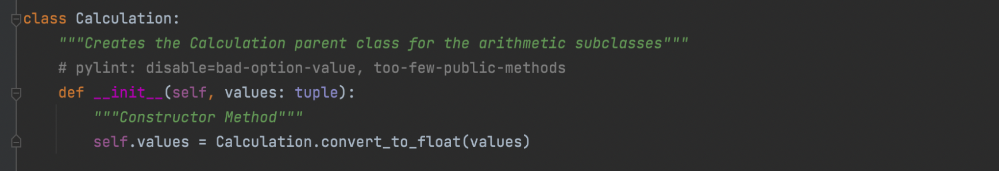
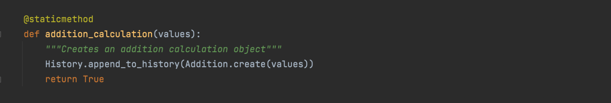
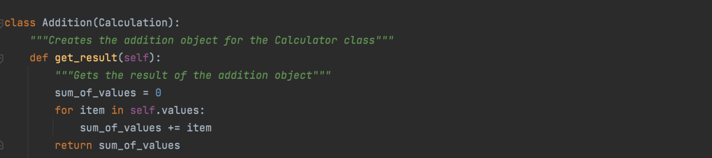
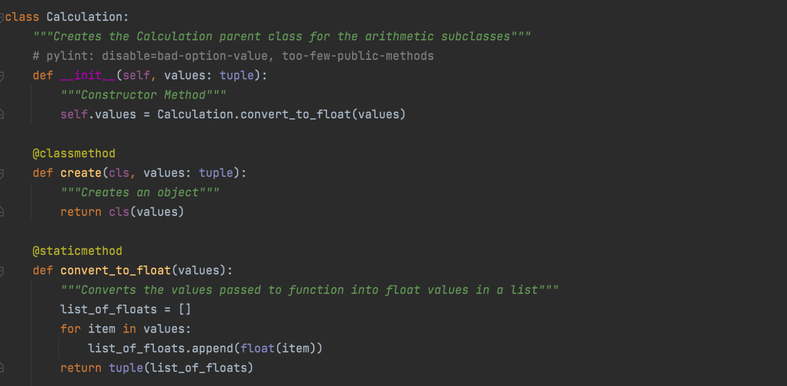
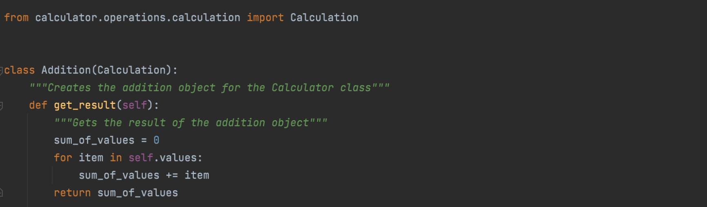

Object Oriented Programming
Understanding the OOP Concepts.
Principles of OOP
Encapsulation
Encapsulation is the concept that an object contains its own, private information. Within a class that is built around an object, the class contains public methods that are able to operate on the private information held within the objects private variables. The private information for an object is unique to that object, and even objects within the same class cannot directly access that information. In the calculator, we have implemented this concept with our Calculation class.
The calculation class initiates/creates an object with the private variable "values" which is instantiated by the user. Although there are a few more steps within the program to create an object, this represents encapsulation because the "values" is stored within "self" which is the object.
Abstraction
Abstraction is the concept that extends from encapsulation. An object should only be operable at a high level by the class it was created with. Within programming in general, there is a goal to achieve, and it does not matter how that goal is achieved. Within the calculator program, I will show you how abstraction works with the addition method.
From the Calculator class, passing a tuple the "adding" method will return the sum of the numbers passed to it. However, we can see that the calculator is more involved than just summing the values. There is a History class, and a method, "addition_calculation" that is not found inside the calculator. So let's follow this program and see where we end up.
When we follow the trail to the addition calculation of the History class, we can see that there is a method, "append_to_history", that adds the Addition.create(values) to a history. This is representative of the factory method, where each method has one task and that's it. The task of "append_to_history" is to store the object to a history that can be referenced later one, however, right now, we are concerned with where the addition calculation occurs. Next, we will follow this method to the Addition class.
Finally, we have reached the end. We can see that this object reaches its result by calling a methods through a series of classes, and eventually leads back to the Addition class to perform the summing operation. Then the result is returned through those same methods and the user can receive the result at the surface.
Inheritance
Inheritance within object-oriented programming is similar to how inheritance works within real life. Similar to how a child inherits the traits of the parents, a child class can inherit traits from a parent class within object-oriented programming! This allows a developer to reduce redundancy and allow a generic parent class share its methods and traits with multiple, more specific child classes. In our calculator, we can see this in the Calculation class and how it interacts with the children classes.

Above, we can see the entire calculation class for the calculator. On its own, it doesn't particularly do too much. It instantiates an object, it has a factory method to create objects, and it converts a tuple of values into a list of floats. That is not particularly exciting, but it serves a very important function. It essentially prepares the values passed to it to be used by its children classes. Addition, Subtraction, Multiplication, and Division.
